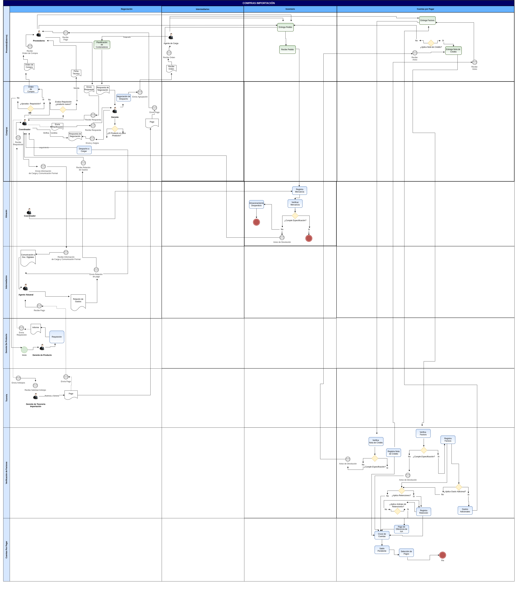

Gestión de Importación
La importación consiste en ingresar al país los productos comprados procedentes de una empresa que se encuentra fuera del territorio nacional. Ahora bien, este proceso tiene implicaciones tributarias, para entender mejor vamos a esquematizar una seríe de pasos que ocurren en este proceso:
La empresa Importadora selecciona a un agente aduanal, conforme al artículo 35 de la Ley Orgánica de Aduanas
Note
Artículo 35:
El Agente de Aduanas es la persona autorizada por el Ministerio de Hacienda para actuar ante los órganos competentes en nombre y por cuenta de aquél que contrata sus servicios, en el trámite de una operación o actividad aduanera. Sin menoscabo de las responsabilidades, que según esta Ley correspondan al consignatario aceptante, exportador o emitente de las mercancías, el agente de aduanas será responsable ante el Fisco Nacional y ante su mandante por las infracciones cometidas a la normativa aduanera derivadas de su acción u omisión, dolosa o culposa en el ejercicio de sus funciones.
El consignatario (Agente aduanal o Importador) establecen la clasificación arancelaria, o es solicitada ante el SENIAT, en caso de no tener clara la clasificación.
En forma paralela, el importador deberá realizar la gestión de negociación con el proveedor de mercancía, depende de la negociación se generará el costo CIF, caso contrario el importador realiza la logística de traslado o transporte de la importación, esta gestión generará algunos gastos imputados a la gestión y que se transforman en costos FOB del material importado, alguno de ellos pueden ser:
Transporte Internacional
Paletizaje
Seguros
Por su parte, el agente aduanal realiza el manifiesto de importación y la declaración única de su valor, anexando los siguientes documentos para nacionalizar la mercancía:
Facturas Comerciales
Facturas de Flete
Conocimiento de Embarque
Guía Aérea
Carta de porte relacionada al medio de transporte en la cual se importó la mercancía
Declaración jurada del valor en aduana
Póliza de seguros
Certificación de origen de mercancía (de ser necesario)
Certificación o autorizaciones previas (de ser necesario)
Otros documentos necesarios por la aduana
Luego, en un periodo no mayor a tres(3) días habiles el importador debe realizar el pago de los tributos aduaneros, una vez sea efectivo el pago, la aduana asigna un canal de control a la declaración única:
Canal Verde: La mercancía es retirada inmediatamente, sin ser necesario examén o reconocimiento.
Canal Amarillo: La mercancía es sometida a examén documental, de no tener observaciones es liberada en un plazo no mayor a 24 horas.
Canal Rojo: La mercancía es sometida a reconocimiento físico y examén documental, de no tener observaciones es liberada en un plazo no mayor a 48 horas.
Finalmente, para retirar la mercancía se cancela el servicio de almacenaje en zona franca para culminar la liquidación en aduana del(os) conterdor(es).
Posteriormente, el agente aduanal entrega la documentación completa al importador una vez haya culminado en su totalidad la nacionalización, y se haya completado los derechos de tasas portuaria y tarifas por servicios portuarios establecidos según sea el caso en la
Ley Orgánica de Aduanas, junto a la documentación del expediente el agente aduanal consigna la relación de gastos de nacionalización, tales como:
Planilla Forma 79084
Planilla Forma 99086
Planilla de Pre-Liquidación
Especies fiscales
Impuestos municipales
Impuestos de grandes transacciones financieras
Comisiones
Documentación
Valoración de manifiesto
Precintos
Movilización
Liberaciones
Gastos por administrativos
Multas
Almacenajes
Uso de Superficie
Entre otros Gastos
Seguros nacionales
Seguridad y vigilancia
Honorarios profesionales
Estos gastos, son cancelados mediante anticipos o pos consignación, bajo un cruce de cuentas entre el agente aduanal y el importador, para finalmente ser convertidos a costos FOB de la mercancía importada, sin embargo en el libro de compras bajo legislación venezolana debe ser reflejados unicamente los costos CIF con el IVA resultante de estos costos.

El presente material elaborado por `ERPyA`_, pretende ofrecerle una explicación eficiente a nuestros clientes del procedimiento a seguir para la importación de productos en ADempiere, en su versión 3.9.2 para la localización Venezuela.